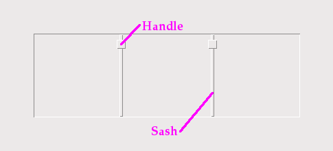

Виджет PanedWindow предназначен для того, чтобы дать пользователю приложения возможность контролировать распределение пространства внутри приложения.
Виджет PanedWindow чем-то похож на Frame: он является контейнером для дочерних виджетов. Каждый виджет PanedWindow содержит горизонтальный или вертикальный стек дочерних виджетов. С помощью мыши пользователь может перетаскивать границы между дочерними виджетами вперед и назад.

Вы можете выбрать отображение ручек внутри виджета. Ручка (handle) - это небольшой квадрат, который пользователь может перетаскивать мышью.
Вы можете сделать видимыми створки. Створка (sash) - это перегородка, расположенная между дочерними виджетами.
1) Панель (pane) - это область, занимаемая одним дочерним виджетом.
Чтобы создать новый виджет PanedWindow как дочерний вид корневого окна или фрейма с именем parent:
w = tk.PanedWindow(parent, option, ...)
Этот конструктор возвращает новый виджет PanedWindow. Вот опции:
Таблица 27. Опции виджета PanedWindow
bg или background |
Цвет фона, отображаемый за дочерними виджетами; см. Раздел 5.3, "Цвета". |
bd или borderwidth |
Ширина границы вокруг внешней стороны виджета; см. раздел Раздел 5.1, "Размеры". По умолчанию это два пикселя. |
cursor |
Курсор, который будет отображаться при наведении мыши на виджет; см. раздел Раздел 5.8, "Курсоры". |
handlepad |
Используйте эту опцию, чтобы указать расстояние между ручкой и концом створки. Для orient=tk.VERTICAL это расстояние между левым концом створки и ручкой; для orient=tk.HORIZONTAL это расстояние между верхней частью створки и ручкой. Значение по умолчанию - восемь пикселей; другие значения см. в Раздел 5.1, "Размеры". |
handlesize |
Используйте этот параметр для указания размера ручки, которая всегда имеет форму квадрата; см. раздел Раздел 5.1, "Размеры". Значение по умолчанию - восемь пикселей. |
height |
Указывает высоту виджета; см. Раздел 5.1, "Размеры". Если вы не укажете этот параметр, высота будет определяться высотой дочерних виджетов. |
opaqueresize |
Эта опция управляет тем, как работает операция изменения размера. При значении по умолчанию opaqueresize=True изменение размера происходит непрерывно при перетаскивании створки. Если для этой опции установлено значение False, створка (и соседние дочерние виджеты) остается на месте до тех пор, пока пользователь не отпустит кнопку мыши, после чего она переходит в новую позицию. |
orient |
Чтобы сложить дочерние виджеты в ряд, используйте orient=tk.HORIZONTAL. Чтобы сложить их сверху вниз, используйте orient=tk.VERTICAL. |
relief |
Выбирает стиль рельефа границы вокруг виджета; см. Раздел 5.6, "Стили рельефа". По умолчанию используется tk.FLAT. |
sashpad |
Используйте эту опцию для выделения дополнительного пространства по обе стороны каждой створки. По умолчанию - ноль; другие значения см. в Раздел 5.1, "Размеры". |
sashrelief |
Эта опция задает стиль рельефа, используемый для отрисовки створок; смотрите Раздел 5.6, "Стили рельефа". По умолчанию используется стиль tk.FLAT. |
sashwidth |
Задает ширину створки; см. Раздел 5.1, "Размеры". По умолчанию ширина составляет два пикселя. |
showhandle |
Используйте showhandle=True для отображения ручек. При значении по умолчанию False пользователь все равно может перемещать створки с помощью мыши. Ручка - это просто визуальная подсказка. |
width |
Ширина виджета; см. Раздел 5.1, "Размеры". Если вы не укажете значение, ширина будет определяться размерами дочерних виджетов. |
Чтобы добавить дочерние виджеты в PanedWindow, создайте их как дочерние элементы родительского PanedWindow, но вместо метода .grid() для их регистрации используйте метод .add() для PanedWindow.
Здесь приведены методы виджетов PanedWindow.
.add(child[, option=value] ...)
Используйте этот метод для добавления заданного виджета
childв качестве следующего дочернего элемента данногоPanedWindow. Сначала создайте виджетchildсPanedWindowв качестве родительского виджета, но не вызывайте метод.grid()для его регистрации. Затем вызовите.add(child), и дочерний виджет появится внутриPanedWindowв следующей доступной позиции.
С каждым дочерним элементом связан набор параметров конфигурации, которые управляют его положением и внешним видом. Смотрите Раздел 19.1, "Опции конфигурации дочерних объектов PanedWindow". Вы можете предоставить эти параметры конфигурации в качестве аргументов ключевых слов в методе
.add(). Вы также можете установить или изменить их значения в любое время с помощью метода.paneconfig()или получить текущее значение любой из этих опций с помощью метода.panecget(); эти методы описаны ниже.
.forget(child)
Удаляет дочерний виджет.
.identify(x, y)
Для заданного местоположения
(x, y)в координатах окна этот метод возвращает значение, описывающее объект в этом местоположении.
- Если объект является дочерним окном, метод возвращает пустую строку.
- Если объект является створкой, метод возвращает кортеж
(n, 'sash'), гдеn- 0 для первой створки, 1 для второй и так далее.
- Если элемент является ручкой, метод возвращает кортеж
(n, 'handle'), гдеn- 0 для первой ручки, 1 для второй и так далее.
.panecget(child, option)
Этот метод извлекает значение опции конфигурации дочернего виджета, где
child- дочерний виджет, аoption- название опции в виде строки. Список опций конфигурации дочерних виджетов см. в Раздел 19.1, "Опции конфигурации дочерних объектов PanedWindow".
.paneconfig(child, option=value, ...)
Используйте этот метод для настройки опций дочерних виджетов. Опции описаны в Раздел 19.1, "Опции конфигурации дочерних объектов PanedWindow".
.panes()
Этот метод возвращает список дочерних виджетов в порядке слева направо (для
orient=tk.HORIZONTAL) или сверху вниз (дляorient=tk.VERTICAL).
.remove(child)
Удаляет заданный
child; это то же действие, что и метод.forget().
.sash_coord(index)
Этот метод возвращает местоположение створки. Аргумент
indexвыбирает створку: 0 для створки между первыми двумя дочерними элементами, 1 для створки между вторым и третьим дочерним элементом и так далее. Результатом является кортеж(x, y), содержащий координаты левого верхнего угла створки.
.sash_place(index, x, y)
Используйте этот метод для изменения положения створки, выбранной по
index(0 для первой створки и так далее). Координатыxиyзадают желаемое новое положение левого верхнего угла створки. Tkinter игнорирует координату, перпендикулярную ориентации виджета: используйте значениеxдля перепозиционирования створки приorient=tk.HORIZONTAL, а координатуyдля перемещения створки при опцииorient=tk.VERTICAL.